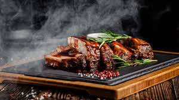
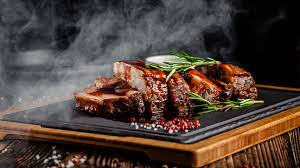

Food Blog
A food blogger is someone who writes about food and his opinions about his experiences. It's just like sharing ordinary life experiences via blogging but here your sole domain is on food.Food photography is the art of creating appetizing images using techniques such as lighting, arrangement, and background to be used commercially by the photographer. Visual appeal of the food alone can influence attraction to food photographers and bloggers. The degree to which a food blogger relies on food photography varies from blog to blog.
 
